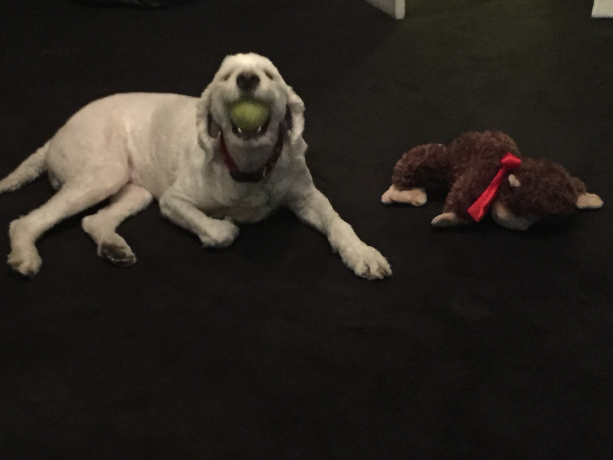

Charlotte is my favorite Golden Doodle. She is 5 years young, and due to her vibrant personality and endless energy, she is often mistaken for a puppy. The breeder said she would be 35-40 pounds, but she is closer to 60 -- making her a big, lovable teddy bear!
Charlotte's favorite activities include playing fetch with balls, specifically tennis balls. She is a nature lover, and always loves to be outside especially when out of the city. She has recently become more comfortable with water and will now go in to the ocean and swim on her own.

Her favorite foods include anything BBQd, (hot dogs, burgers, etc). However, she has a special place in her heart for proscioutto, and has earned the nickname "The Proscioutto bandit"